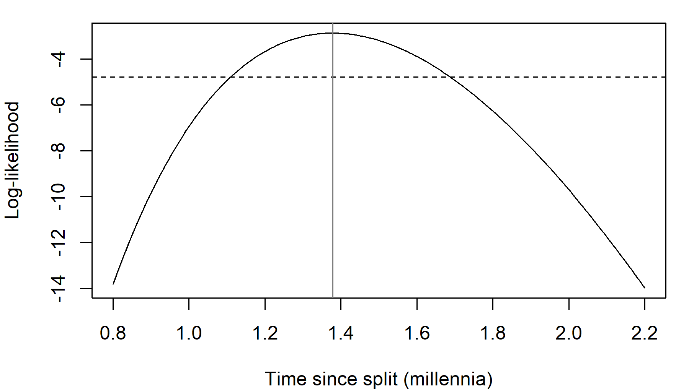
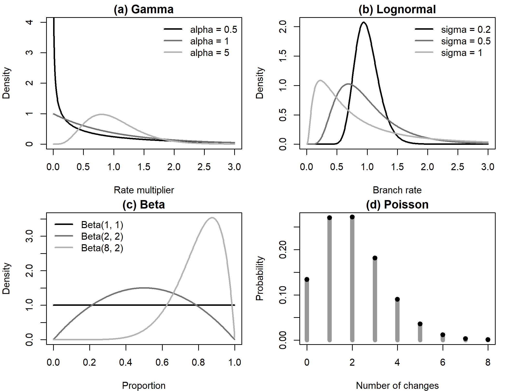
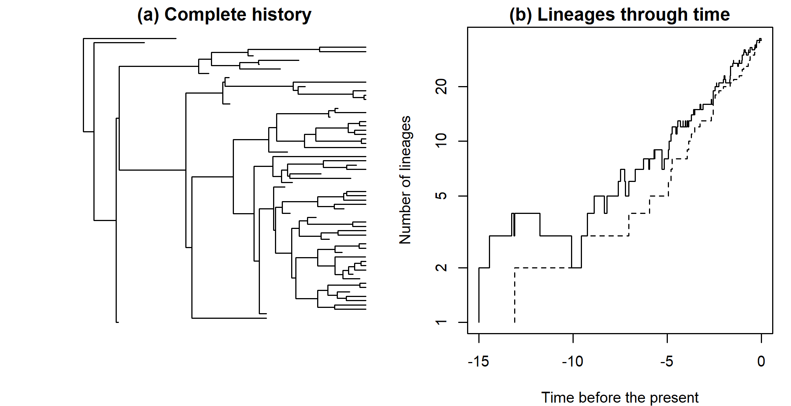
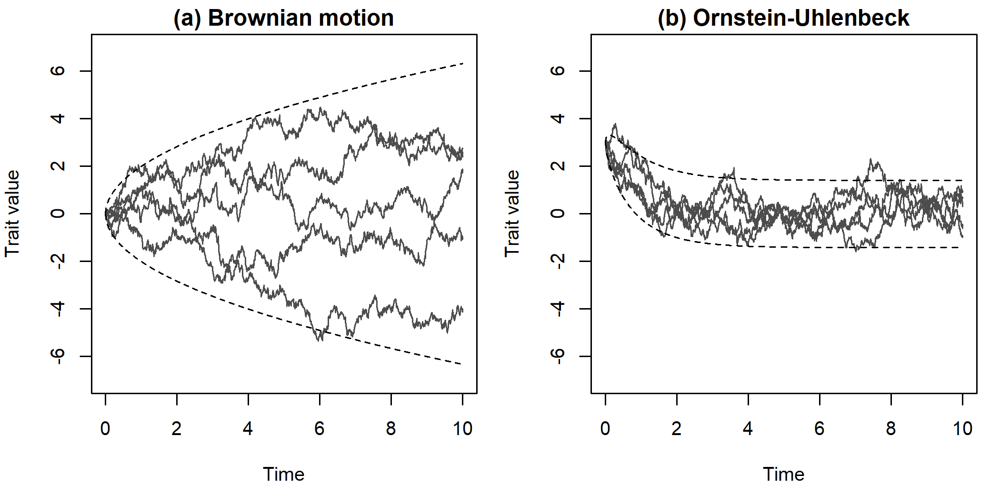
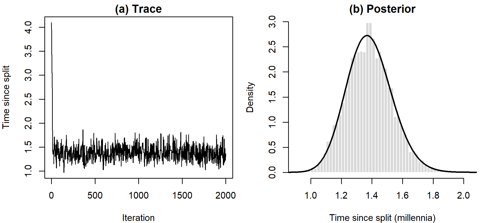

A Mathematical Preliminaries
This appendix collects the mathematics that the chapters take for granted. It is written for readers who met probability in an introductory statistics course, perhaps some years ago, and who have not studied linear algebra or stochastic processes. Each section starts with the intuition, gives the few formulas the chapters rely on, shows a short piece of R code to run and modify, and ends with a note on where in the book the material is needed. Table A.1 shows which sections each chapter draws on; a sensible strategy is to start a chapter and to come here when an idea is unfamiliar.
The sections form two strands. One is statistical (Sections A.1–A.4 and A.12): how a probability model is turned into an inference. The other concerns the models themselves: how a cognate class or a word-order type changes along a branch (Sections A.5–A.7), how lineages split and die out (Section A.8), and how a continuous quantity such as a homeland coordinate wanders over time (Sections A.9–A.11). Every phylogenetic analysis combines the two: a model of change gives the probability of the data, and a method of inference turns that probability into estimates.
Notation used in this appendix and in the book. \(P(A)\) is the probability of an event \(A\), and \(f(x)\) is a probability density. \(P(A \mid B)\), read “the probability of \(A\) given \(B\)”, is a conditional probability. \(X \sim \text{Poisson}(\lambda)\) means “\(X\) has a Poisson distribution with parameter \(\lambda\)”. \(\mathrm{E}[X]\), \(\operatorname{Var}(X)\) and \(\operatorname{Cov}(X, Y)\) are expectation, variance and covariance. Logarithms are natural logarithms (base \(e\)), whether written \(\ln\) or \(\log\). Lower-case bold letters (\(\mathbf{x}\)) are vectors, upper-case bold letters (\(\mathbf{Q}\), \(\mathbf{C}\)) are matrices, \(\mathbf{x}^\top\) is a transpose, \(\mathbf{I}\) is the identity matrix and \(\mathbf{1}\) is a vector of ones. A hat marks an estimate: \(\hat\theta\) is an estimate of \(\theta\).
| Chapter | Prob | Bayes | Lik | Dist | Mat | Exp | CTMC | Pois | BM | MVN | GLS | MCMC |
|---|---|---|---|---|---|---|---|---|---|---|---|---|
| 1 History and motivation | o | o | o | |||||||||
| 2 Trees and tree space | o | o | x | |||||||||
| 3 Linguistic data | o | o | ||||||||||
| 4 Distance and parsimony | x | o | o | o | o | o | ||||||
| 5 Maximum likelihood | x | o | x | x | x | x | x | o | ||||
| 6 Bayesian inference | x | x | x | x | o | o | o | x | x | |||
| 7 Lexical models | x | o | x | x | x | x | x | x | o | |||
| 8 Borrowing and networks | x | o | o | o | o | |||||||
| 9 Clocks and rates | x | x | o | x | o | x | x | o | ||||
| 10 Divergence times | x | x | o | x | x | o | ||||||
| 11 Phylogeography | x | x | x | x | x | x | x | o | x | x | x | o |
| 12 Ancestral states | x | x | x | o | o | o | x | o | o | o | ||
| 13 Comparative methods | x | o | x | o | x | o | x | x | x | x | o | |
| 14 Cultural traits | x | o | o | x | o | o | x | o | ||||
| 15 Critiques and pitfalls | x | x | x | x | o | o | x | |||||
| 16 The biologist’s toolbox | x | o | x | x | o | o | x | x | o | o | ||
| 17 A workflow in R | o | x | o | x | o | o | x | x | ||||
| 18 Synthesis | o | o |
A.1 Probability and conditional probability
A probability is a number between 0 and 1 attached to an event. It can be read as a long-run frequency (the fraction of meanings on a 200-item list that are replaced within a millennium, over very many comparable cases) or as a degree of belief (how strongly the evidence supports the hypothesis that Anatolian was the first branch to split from the rest of Indo-European). Bayesian inference (Chapter 6) uses both readings. The mathematics is the same in either case and rests on three rules:
- \(0 \le P(A) \le 1\), and an event that is certain has probability 1.
- If \(A\) and \(B\) cannot both happen, \(P(A \text{ or } B) = P(A) + P(B)\).
- As a consequence, \(P(\text{not } A) = 1 - P(A)\).
A.1.1 Random variables, expectation and variance
A random variable is a quantity whose value is determined by chance. The number of meanings, out of 200, for which two languages have cognate words is a discrete random variable: it takes whole-number values, and its distribution is given by the probabilities \(P(X = x)\), which sum to 1. The time since two languages split is a continuous random variable. Its distribution is given by a probability density \(f(x)\), and probabilities are areas under the density: \[P(a < X < b) = \int_a^b f(x)\, dx .\] A density is not a probability: it can exceed 1, and the probability of any single exact value, such as a split exactly 4,312 years ago, is zero. The cumulative distribution function \(F(x) = P(X \le x)\) is a probability in both cases.
The expectation (mean) \(\mathrm{E}[X] = \sum_x x\,P(X = x)\) or \(\int x f(x)\,dx\) is the probability-weighted average of \(X\). The variance \(\operatorname{Var}(X) = \mathrm{E}\big[(X - \mathrm{E}[X])^2\big]\) measures spread, and its square root is the standard deviation. Expectation is linear, \(\mathrm{E}[aX + bY] = a\mathrm{E}[X] + b\mathrm{E}[Y]\), and the variance of a sum of independent variables is the sum of their variances. For dependent variables the covariance \(\operatorname{Cov}(X, Y) = \mathrm{E}\big[(X - \mathrm{E}[X])(Y - \mathrm{E}[Y])\big]\) enters too: \(\operatorname{Var}(X + Y) = \operatorname{Var}(X) + \operatorname{Var}(Y) + 2\operatorname{Cov}(X, Y)\). The correlation is the covariance divided by the product of the two standard deviations.
A.1.2 Joint, marginal and conditional probability
Consider two typological features: the order of object and verb (OV or VO) and the type of adposition (postpositions or prepositions). The R code below gives counts for 100 languages, invented in the spirit of Greenberg’s word-order universals. The joint probability \(P(\text{OV}, \text{postpositions})\) is the proportion of languages with both properties, 0.45. A marginal probability such as \(P(\text{OV})\) sums the joint probabilities over the other feature: \(0.45 + 0.05 = 0.50\). The conditional probability of postpositions given OV is the proportion of OV languages that have postpositions: \[\begin{equation} P(A \mid B) = \frac{P(A, B)}{P(B)}, \qquad\text{equivalently}\qquad P(A, B) = P(A \mid B)\, P(B). \tag{A.1} \end{equation}\] Here \(P(\text{postpositions} \mid \text{OV}) = 0.45/0.50 = 0.90\), whereas \(P(\text{postpositions} \mid \text{VO}) = 0.08/0.50 = 0.16\). The two features are therefore not independent. Two events are independent when knowing one does not change the probability of the other, \(P(A \mid B) = P(A)\), or equivalently \(P(A, B) = P(A)\,P(B)\).
counts <- matrix(c(45, 5, 8, 42), nrow = 2, byrow = TRUE,
dimnames = list(order = c("OV", "VO"),
adposition = c("Postp", "Prep")))
joint <- counts / sum(counts) # joint probabilities
rowSums(joint) # marginal P(order)#> OV VO
#> 0.5 0.5#> adposition
#> order Postp Prep
#> OV 0.90 0.10
#> VO 0.16 0.84# under independence the joint would be the product of the marginals
outer(rowSums(joint), colSums(joint))#> Postp Prep
#> OV 0.265 0.235
#> VO 0.265 0.235A catch runs through the whole book: the 100 languages are not 100 independent draws. Related languages share both features because they inherited them, so a sample dominated by one large family can make two features look associated when the association reflects a handful of historical events. This is Galton’s problem (Section 13.1.2), and the tools for it are phylogenetic covariance matrices (Section A.10), generalized least squares (Section A.11) and models of correlated change on trees (Chapter 13).
A.1.3 The law of total probability
Often we can compute the probability of an event \(B\) only conditionally on some unknown variable. If \(A_1, A_2, \ldots\) are mutually exclusive possibilities that cover every case, then \[\begin{equation} P(B) = \sum_{i} P(B \mid A_i)\, P(A_i). \tag{A.2} \end{equation}\] In phylogenetics the unknowns are the states of ancestral languages. We never observe whether Proto-Germanic had a word of a given cognate class for ‘dog’, but we can compute the probability of the daughters given each possible ancestral state and average over those states. Felsenstein’s pruning algorithm (Chapter 5) organizes this sum efficiently over all internal nodes of a tree.
A.1.4 Conditional independence
Two events can be dependent and yet independent once a third variable is known. This conditional independence explains why related languages resemble each other. Suppose a proto-language had a word of a certain cognate class with probability \(P(A = 1) = 0.6\). Each of two daughters keeps the class with probability 0.8 if the ancestor had it, and acquires it (by parallel development or borrowing) with probability 0.1 if not. Given the ancestor’s state the daughters change independently, \(P(D_1 = 1, D_2 = 1 \mid A = a) = P(D_1 = 1 \mid A = a)\,P(D_2 = 1 \mid A = a)\). Without that knowledge they are dependent: seeing the word in one daughter makes it more likely that the ancestor had it, and so that the other daughter has it too.
p_A <- c(absent = 0.4, present = 0.6) # P(A = 0), P(A = 1)
p_D <- c(absent = 0.1, present = 0.8) # P(D = 1 | A = 0), P(D = 1 | A = 1)
p_D1 <- sum(p_D * p_A) # law of total probability
p_both <- sum(p_D^2 * p_A) # independent given A, then sum
c(P_D1 = p_D1, P_both = p_both, product_of_marginals = p_D1^2)#> P_D1 P_both product_of_marginals
#> 0.5200 0.3880 0.2704The probability that both daughters have the word, 0.388, is well above the product of the marginal probabilities, 0.270. All statistical dependence between related languages arises in this way: daughters evolve independently along their own branches but start from the same ancestor. Phylogenetic models also assume conditional independence among characters: given the tree and parameters, the probability of a data matrix is the product of the probabilities of its columns. For language data this is not always reasonable; cognate classes within one meaning compete for the same slot (Chapter 7).
A.1.5 Working on the log scale
With thousands of characters, the product of their probabilities is smaller than the smallest number a computer can store and is rounded to zero. Software therefore works with logarithms: the log of a product is the sum of the logs. When probabilities must be added on the log scale, the log-sum-exp trick avoids the same problem: \(\ln(e^a + e^b) = m + \ln(e^{a - m} + e^{b - m})\) with \(m = \max(a, b)\).
#> [1] 0#> [1] -2408log_sum_exp <- function(a) { m <- max(a); m + log(sum(exp(a - m))) }
log_sum_exp(c(-2000, -2001)) # ln(e^-2000 + e^-2001) without underflow#> [1] -2000Where this is used in the book. Conditional probability and the law of total probability are the basis of the likelihood calculation in Chapter 5 and of every model in Chapters 7 to 12. Marginal and joint ancestral reconstructions (Chapter 12) are conditional probabilities of ancestral states given the data. Galton’s problem and the non-independence of languages are central to Chapters 13 and 14, and the dependence among characters within a meaning is taken up in Chapters 7 and 15.
A.2 Bayes’ theorem
Writing the joint probability of \(H\) and \(D\) in two ways with Equation (A.1), \(P(H \mid D)\,P(D) = P(D \mid H)\,P(H)\), and dividing by \(P(D)\) gives Bayes’ theorem: \[\begin{equation} P(H \mid D) = \frac{P(D \mid H)\, P(H)}{P(D)}, \qquad P(D) = \sum_{H'} P(D \mid H')\, P(H'). \tag{A.3} \end{equation}\] Read \(H\) as a hypothesis and \(D\) as data. \(P(H)\) is the prior probability, \(P(D \mid H)\) the likelihood (how probable the data are if \(H\) is true) and \(P(H \mid D)\) the posterior probability. The denominator, the marginal likelihood or evidence, comes from the law of total probability (Equation (A.2)) and makes the posterior probabilities sum to one.
A.2.1 A loanword example
Historical linguists reason this way informally all the time. A word in one language resembles its equivalent in a neighboring, related language: inherited or borrowed? Suppose experience with this semantic field suggests that 30% of such resemblances are loans, \(P(\text{loan}) = 0.3\). The data: the word does not show the sound correspondence regular in inherited vocabulary. Inherited words are sometimes irregular through analogy or taboo, say with probability 0.1; a word borrowed after the sound changes usually is, say with probability 0.7. (The numbers are illustrative.) Then \[P(\text{loan} \mid \text{irregular}) = \frac{0.7 \times 0.3}{0.7 \times 0.3 + 0.1 \times 0.7} = \frac{0.21}{0.28} = 0.75 .\] The irregularity raises the probability of borrowing from 0.3 to 0.75, but does not make it certain. Dividing Equation (A.3) for \(H_1\) by the same equation for \(H_0\) cancels \(P(D)\) and gives the odds form: \[\begin{equation} \underbrace{\frac{P(H_1 \mid D)}{P(H_0 \mid D)}}_{\text{posterior odds}} = \underbrace{\frac{P(D \mid H_1)}{P(D \mid H_0)}}_{\text{Bayes factor}} \times \underbrace{\frac{P(H_1)}{P(H_0)}}_{\text{prior odds}} . \tag{A.4} \end{equation}\] Here the prior odds of a loan are \(3/7\), the Bayes factor is \(0.7/0.1 = 7\), and the posterior odds are \(3\), a probability of \(3/4\). The Bayes factor measures how far the data shift the odds, wherever they started. When the hypotheses are whole models with their own parameters, it is a ratio of marginal likelihoods, each averaged over that model’s prior (Chapter 6).
A.2.2 Bayes’ theorem for continuous parameters
For a continuous parameter \(\theta\), such as a rate of word replacement, the theorem applies to densities: \[\begin{equation} f(\theta \mid D) = \frac{f(D \mid \theta)\, f(\theta)}{f(D)}, \qquad f(D) = \int f(D \mid \theta)\, f(\theta)\, d\theta , \tag{A.5} \end{equation}\] summarized as “posterior \(\propto\) likelihood \(\times\) prior” (\(\propto\) means “proportional to”; \(f(D)\) does not depend on \(\theta\)). Rearranged, the equation says that the ratio of posterior to prior density at any value \(\theta\) is \(f(D \mid \theta)/f(D)\): the data raise the plausibility of exactly those values that predicted the data better than the model did on average (Morey et al. 2016). Estimation and model comparison thus rest on the same evidence. In simple cases this ratio, evaluated at a point value nested in a larger model, equals the Bayes factor in favor of that point value (the Savage–Dickey density ratio).
Suppose we want the probability \(p\) that a basic-vocabulary item survives a millennium. In a language documented at two stages a thousand years apart, 81 of 100 meanings still use a word of the same cognate class (an invented but realistic figure). Treating meanings as independent trials, the likelihood is binomial (Section A.4), \(f(D \mid p) \propto p^{81}(1 - p)^{19}\). With a beta prior, \(f(p) \propto p^{a - 1}(1 - p)^{b - 1}\), the product is \(p^{81 + a - 1}(1 - p)^{19 + b - 1}\), so the posterior is Beta\((a + 81, b + 19)\). Such a conjugate prior is rare in phylogenetics, which is why the book relies on Markov chain Monte Carlo (Section A.12), but it makes the logic transparent. The code also computes the posterior on a grid, a brute-force method that works for any one-parameter model.
k <- 81; N <- 100
a <- 1; b <- 1 # flat Beta(1, 1) prior
post_mean <- (a + k) / (a + b + N)
cred <- qbeta(c(0.025, 0.975), a + k, b + N - k)
c(mean = post_mean, lower = cred[1], upper = cred[2])#> mean lower upper
#> 0.8039 0.7219 0.8746# the same posterior on a grid: prior x likelihood, then normalize
p <- seq(0.001, 0.999, by = 0.001)
unnorm <- dbeta(p, a, b) * dbinom(k, N, p)
post <- unnorm / sum(unnorm)
c(grid_mean = sum(p * post))#> grid_mean
#> 0.8039# an informative Beta(20, 20) prior matters more when data are few
qbeta(c(0.025, 0.975), 20 + 8, 20 + 2) # 8 of 10 retained#> [1] 0.4221 0.6933#> [1] 0.6446 0.7923The 95% credible interval is a direct probability statement: given the model, prior and data, \(p\) lies between the limits with probability 0.95. (A confidence interval does not mean this; see Section A.3.2.) The last two lines show a general pattern. The prior Beta(20, 20), centered on 0.5, pulls the estimate strongly toward 0.5 with 10 meanings but much less with 100. Posteriors become less sensitive to the prior as data accumulate; marginal likelihoods, and hence Bayes factors, remain sensitive to how widely the prior is spread (Chapter 6).
Where this is used in the book. Bayes’ theorem is the foundation of Chapter 6 and of most analyses in Chapters 9 to 12, where priors on rates, tree shapes and calibrations do much of the work. Bayes factors appear in model comparison (Chapter 6), in tests of dispersal routes (Chapter 11) and of correlated evolution (Chapters 13 and 14). The sensitivity of results to priors is a recurring theme of Chapters 10, 15 and 17.
A.3 Likelihood and maximum likelihood
The likelihood of a parameter value \(\theta\) is the probability of the observed data computed as if \(\theta\) were true: \[\begin{equation} L(\theta) = P(D \mid \theta), \tag{A.6} \end{equation}\] regarded as a function of \(\theta\) with the data held fixed. As a function of the data, \(P(D \mid \theta)\) sums to one; as a function of \(\theta\) it need not, and it is not a probability distribution for \(\theta\). Only ratios matter: \(L(\theta_1)/L(\theta_2) = 4\) means that the data are four times as probable under \(\theta_1\) as under \(\theta_2\), so constant factors not involving \(\theta\) can be dropped.
A.3.1 A worked example: dating a split from shared cognates
Two languages share cognates for \(k = 110\) of \(N = 200\) meanings. Assume, as glottochronology did, that every meaning’s word is replaced at the same constant rate \(r\) in every lineage, independently. A word survives time \(t\) in one lineage with probability \(e^{-rt}\) (Section A.8), so a cognate pair survives in both with probability \(p(t) = e^{-2rt}\), and the likelihood of the time since the split is binomial: \[\begin{equation} L(t) = \binom{N}{k}\, e^{-2rtk} \left(1 - e^{-2rt}\right)^{N - k}. \tag{A.7} \end{equation}\] The maximum likelihood estimate (MLE) is the value of \(t\) that makes the data most probable; it is easiest to find by maximizing the log-likelihood \(\ell = \ln L\). For the binomial probability itself, \(\ell(p) = k \ln p + (N - k)\ln(1 - p) + \text{const}\), and setting \(\ell'(p) = k/p - (N - k)/(1 - p)\) to zero gives \(\hat p = k/N\). MLEs are invariant under reparameterization (the MLE of a function of \(p\) is that function of \(\hat p\)), so solving \(e^{-2r\hat t} = k/N\) gives \[\hat t = -\frac{\ln(k/N)}{2r},\] the glottochronological formula of Equation (9.4). Glottochronology was maximum likelihood estimation under a very strong model; its problems (Chapter 9) lie in the assumptions of a universal constant rate, independent meanings and no borrowing, not in the arithmetic.
A.3.2 Uncertainty from the shape of the likelihood
A sharply peaked log-likelihood means that the data pin the parameter down. The curvature at the peak, the observed information \(I(\hat\theta) = -\ell''(\hat\theta)\), gives an approximate standard error \(1/\sqrt{I(\hat\theta)}\). A more robust likelihood interval contains the values whose log-likelihood is within 1.92 units of the maximum (half of 3.84, the 95% point of the \(\chi^2_1\) distribution). It is an approximate confidence interval: if the model is true, intervals constructed this way contain the true value in about 95% of repeated data sets, a statement about the procedure rather than about any one interval.
N <- 200; k <- 110
r <- -log(0.805) # 80.5% retention per millennium
loglik <- function(t) dbinom(k, N, exp(-2 * r * t), log = TRUE)
fit <- optimize(loglik, c(0.01, 10), maximum = TRUE)
t_hat <- fit$maximum
c(numerical = t_hat, formula = -log(k / N) / (2 * r))#> numerical formula
#> 1.378 1.378# standard error from the curvature (numerical second derivative)
h <- 1e-4
d2 <- (loglik(t_hat + h) - 2 * loglik(t_hat) + loglik(t_hat - h)) / h^2
se <- 1 / sqrt(-d2)
# likelihood interval: where the log-likelihood has dropped by 1.92
drop_fn <- function(t) loglik(t) - (fit$objective - qchisq(0.95, 1) / 2)
ci <- c(uniroot(drop_fn, c(0.01, t_hat))$root,
uniroot(drop_fn, c(t_hat, 10))$root)
round(c(t_hat = t_hat, se = se, lower = ci[1], upper = ci[2]), 3)#> t_hat se lower upper
#> 1.378 0.147 1.109 1.688tt <- seq(0.8, 2.2, length.out = 200)
par(mar = c(4, 4, 1, 1))
plot(tt, sapply(tt, loglik), type = "l", xlab = "Time since split (millennia)",
ylab = "Log-likelihood")
abline(h = fit$objective - 1.92, lty = 2)
abline(v = t_hat, col = "grey50")
Figure A.1: Log-likelihood of the time since the split of two languages that share 110 cognates out of 200 meanings, with the replacement rate fixed at 0.217 per millennium. The dashed line lies 1.92 log-units below the maximum; the times at which the curve crosses it are the ends of an approximate 95 percent likelihood interval. The gray line marks the maximum likelihood estimate.
The estimate is about 1.38 millennia with a standard error of about 0.15. That is sampling uncertainty under the model, much smaller than the uncertainty about the model itself, such as whether the rate really is 0.217 per millennium in these lineages.
A.3.3 Comparing models
Two models are nested when one is a special case of the other, as equal gain and loss rates are a special case of unequal ones. If the smaller model is true and the sample large, the likelihood ratio statistic \(\Lambda = 2[\ell(\hat\theta_1) - \ell(\hat\theta_0)]\) has approximately a \(\chi^2\) distribution with degrees of freedom equal to the number of extra parameters. The approximation fails when the smaller model puts a parameter on the boundary of its range (testing whether a variance is zero, say), and tree topologies are not nested models at all, so comparing trees needs the special tests of Chapter 5. For non-nested models, \(\mathrm{AIC} = -2\ell + 2p\) and \(\mathrm{BIC} = -2\ell + p\ln n\), with \(p\) parameters and \(n\) observations, trade fit against complexity (Equation (5.12)).
When the model is correct and the sample large, MLEs are consistent (they converge to the true value) and asymptotically as precise as any estimator. In phylogenetics “large” usually means many characters; the number of languages, and of independent historical events, is fixed by history. When the model is wrong, the MLE converges to the value that brings the model closest to the truth, which need not be historically meaningful.
Where this is used in the book. Likelihood is the subject of Chapter 5 and the engine of every model-based method in the book: models of lexical change and their comparison (Chapter 7), glottochronology as an estimator (Chapter 9), maximum likelihood ancestral states (Chapter 12), and fitting and comparing Brownian, Ornstein-Uhlenbeck and discrete-character models in Chapters 13, 14 and 16. In Bayesian analyses the same likelihood is combined with a prior (Section A.2).
A.4 Probability distributions used in the book
A handful of standard distributions do almost all the work in phylogenetic models: for counts, waiting times, positive rates, proportions and unbounded quantities (Table A.2). In R each distribution xxx has four functions: dxxx (probability or density), pxxx (cumulative distribution), qxxx (quantiles) and rxxx (random draws).
| Distribution | Values | Mean | R name | Typical use in the book |
|---|---|---|---|---|
| Binomial\((N, p)\) | \(0, 1, \ldots, N\) | \(Np\) | binom |
Number of meanings retained or shared |
| Poisson\((\lambda)\) | \(0, 1, 2, \ldots\) | \(\lambda\) | pois |
Number of changes on a branch; number of cognate classes born |
| Exponential\((\lambda)\) | \(x > 0\) | \(1/\lambda\) | exp |
Waiting time until a replacement or a split; priors on rates and branch lengths |
| Gamma\((\alpha, \beta)\) | \(x > 0\) | \(\alpha/\beta\) | gamma |
Rate variation among characters; priors on rates |
| Lognormal\((\mu, \sigma)\) | \(x > 0\) | \(e^{\mu + \sigma^2/2}\) | lnorm |
Branch rates in relaxed clocks; calibration densities |
| Beta\((a, b)\) | \(0 < x < 1\) | \(a/(a + b)\) | beta |
Proportions: retention probabilities, state frequencies |
| Dirichlet\((\alpha_1, \ldots, \alpha_K)\) | proportions summing to 1 | \(\alpha_k / \sum_j \alpha_j\) | (via gamma) |
Frequencies of several states; relative rates |
| Normal\((\mu, \sigma^2)\) | any real number | \(\mu\) | norm |
Brownian increments; coordinates; calibration densities |
A.4.1 Counts: binomial and Poisson
If each of \(N\) independent trials succeeds with the same probability \(p\), the number of successes \(K\) has the binomial distribution \[\begin{equation} P(K = k) = \binom{N}{k} p^k (1 - p)^{N - k}, \qquad \mathrm{E}[K] = Np, \qquad \operatorname{Var}(K) = Np(1 - p). \tag{A.8} \end{equation}\] Retained and shared meanings were modeled this way in Sections A.2 and A.3. Both assumptions are questionable for vocabulary: some meanings (‘two’, ‘I’) are far more stable than others (‘dirty’, ‘to throw’). When \(p\) varies across meanings, counts vary more than the binomial predicts (overdispersion), and the remedy is to let rates vary across characters, usually with a gamma distribution (below).
The Poisson distribution describes counts of independent events occurring at a constant average rate, with no upper limit: \[\begin{equation} P(K = k) = \frac{\lambda^k e^{-\lambda}}{k!}, \qquad \mathrm{E}[K] = \operatorname{Var}(K) = \lambda . \tag{A.9} \end{equation}\] It is the limit of the binomial for large \(N\) and small \(p\) with \(Np = \lambda\), and sums of independent Poisson counts are Poisson. The number of replacements of a meaning’s word along a branch, and the number of cognate classes born on a branch in the stochastic Dollo model (Chapter 7), are Poisson counts (Section A.8).
A.4.2 Waiting times: the exponential distribution
If events happen at constant rate \(\lambda\), the waiting time \(T\) until the next one has the exponential density \[\begin{equation} f(t) = \lambda e^{-\lambda t}, \qquad P(T > t) = e^{-\lambda t}, \qquad \mathrm{E}[T] = 1/\lambda, \qquad \operatorname{Var}(T) = 1/\lambda^2 . \tag{A.10} \end{equation}\] The survival function \(P(T > t) = e^{-\lambda t}\) is the retention curve of glottochronology, and the half-life is \(\ln 2 / \lambda\). The exponential is memoryless: \(P(T > s + t \mid T > s) = P(T > t)\), so a word that has survived 2,000 years is as likely to be replaced next century as one borrowed last year. That is a strong assumption; entrenchment with age, or the fragility of recent loans, would make waiting times non-exponential. Exponential distributions also serve as priors for branch lengths and rates when only a rough scale is known.
A.4.3 Rates: the gamma distribution and discrete-gamma categories
The gamma distribution with shape \(\alpha\) and rate \(\beta\) has density
\[\begin{equation}
f(x) = \frac{\beta^\alpha}{\Gamma(\alpha)}\, x^{\alpha - 1} e^{-\beta x}, \qquad \mathrm{E}[X] = \frac{\alpha}{\beta}, \qquad \operatorname{Var}(X) = \frac{\alpha}{\beta^2},
\tag{A.11}
\end{equation}\]
where \(\Gamma(\alpha)\) is the gamma function (\(\Gamma(n) = (n - 1)!\) for whole numbers). For whole-number \(\alpha\), \(X\) is the sum of \(\alpha\) exponential waiting times with rate \(\beta\). Parameterizations differ between programs (R’s dgamma() accepts rate \(= \beta\) or scale \(= 1/\beta\); BEAST and RevBayes have their own conventions), so check before typing in a prior.
The gamma distribution’s main use in the book is rate variation among characters. Each character gets a rate multiplier \(\rho\) from a gamma distribution with \(\alpha = \beta\), so the mean multiplier is 1 and the variance \(1/\alpha\) (Equation (7.5)). Small \(\alpha\) (\(< 1\)) means strong heterogeneity, with most characters very slow and a few very fast; large \(\alpha\) means similar rates for all.
Because integrating the likelihood over a continuous rate distribution is expensive, Yang (1994) approximated it with \(K\) equally probable categories (usually \(K = 4\)): the gamma is cut at its quantiles into \(K\) slices of probability \(1/K\), and each slice is represented by its mean. Since \(x f(x; \alpha, \beta) = (\alpha/\beta)\, f(x; \alpha + 1, \beta)\), the slice means come from the cumulative distribution function of a gamma with shape \(\alpha + 1\): \[\begin{equation} r_c = K \left[ G(b_c; \alpha + 1, \alpha) - G(a_c; \alpha + 1, \alpha) \right], \qquad c = 1, \ldots, K, \tag{A.12} \end{equation}\] where \(G\) is the gamma cumulative distribution function and \([a_c, b_c]\) the \(c\)-th slice. A character’s likelihood is the average of its likelihoods with branch lengths multiplied by each \(r_c\) (Equation (5.6)). Some programs use rescaled slice medians instead, one reason why likelihoods from different programs are not always comparable.
discrete_gamma <- function(alpha, K = 4) {
cuts <- qgamma(seq(0, 1, length.out = K + 1), shape = alpha, rate = alpha)
K * diff(pgamma(cuts, shape = alpha + 1, rate = alpha)) # slice means
}
rates <- sapply(c(0.5, 1, 5), discrete_gamma)
colnames(rates) <- paste("alpha =", c(0.5, 1, 5))
round(rates, 3)#> alpha = 0.5 alpha = 1 alpha = 5
#> [1,] 0.033 0.137 0.502
#> [2,] 0.252 0.477 0.804
#> [3,] 0.820 1.000 1.083
#> [4,] 2.894 2.386 1.611#> alpha = 0.5 alpha = 1 alpha = 5
#> 1 1 1With \(\alpha = 0.5\) the slowest quarter of characters change at about 3% of the average rate and the fastest at almost three times it; with \(\alpha = 5\) the categories are much closer together.
A.4.4 Multiplicative variation: the lognormal distribution
A positive \(X\) is lognormal if \(\ln X \sim \mathcal{N}(\mu, \sigma^2)\). Its median is \(e^\mu\) and its mean \(e^{\mu + \sigma^2/2}\), so a mean of 1 needs \(\mu = -\sigma^2/2\). It arises when many small independent effects multiply, is skewed to the right, and has coefficient of variation \(\sqrt{e^{\sigma^2} - 1} \approx \sigma\) for small \(\sigma\). In the uncorrelated lognormal relaxed clock (Chapter 9) each branch draws its rate from a lognormal, and \(\sigma\) measures the departure from a strict clock. Lognormal densities are also popular calibration priors (Chapter 10); programs differ in whether \(\mu\) is given on the log scale or the mean on the real scale, a common source of error.
A.4.5 Proportions: the beta and Dirichlet distributions
The beta distribution describes a proportion \(p\) between 0 and 1: \[\begin{equation} f(p) = \frac{p^{a - 1}(1 - p)^{b - 1}}{B(a, b)}, \qquad \mathrm{E}[p] = \frac{a}{a + b}, \tag{A.13} \end{equation}\] where \(B(a, b)\) is a normalizing constant. Beta\((1, 1)\) is uniform, and larger \(a + b\) concentrates the distribution around its mean. It serves as a prior for retention probabilities (Section A.2.2) and for the frequency of the “present” state in binary cognate models.
The Dirichlet distribution generalizes the beta to \(K\) proportions summing to 1, with density proportional to \(\prod_k x_k^{\alpha_k - 1}\); each proportion alone is Beta\((\alpha_k, \sum_j \alpha_j - \alpha_k)\). Dirichlet\((1, \ldots, 1)\) is flat, and larger \(\alpha_k\) cluster the proportions more tightly. The book uses Dirichlet priors for the stationary frequencies of multistate characters (say SOV, SVO and VSO) and for relative rates in a general rate matrix. A Dirichlet draw is a set of independent gamma draws with shapes \(\alpha_k\), each divided by their sum.
rdirichlet <- function(n, a) {
g <- matrix(rgamma(n * length(a), shape = a), ncol = length(a),
byrow = TRUE)
g / rowSums(g) # each row is one set of proportions
}
set.seed(1)
flat <- rdirichlet(5000, c(SOV = 1, SVO = 1, VSO = 1))
tight <- rdirichlet(5000, c(SOV = 10, SVO = 10, VSO = 10))
rbind(mean_flat = colMeans(flat), sd_flat = apply(flat, 2, sd),
mean_tight = colMeans(tight), sd_tight = apply(tight, 2, sd))#> [,1] [,2] [,3]
#> mean_flat 0.33164 0.33456 0.33380
#> sd_flat 0.23394 0.23577 0.23641
#> mean_tight 0.33429 0.33279 0.33293
#> sd_tight 0.08584 0.08503 0.08598A.4.6 The normal distribution
The normal (Gaussian) density with mean \(\mu\) and variance \(\sigma^2\) is \[\begin{equation} f(x) = \frac{1}{\sqrt{2\pi\sigma^2}} \exp\!\left[-\frac{(x - \mu)^2}{2\sigma^2}\right]. \tag{A.14} \end{equation}\] About 95% of its probability lies within 1.96 standard deviations of the mean. Sums of independent normals are normal, and by the central limit theorem the sum of many small independent effects is approximately normal, which is why the normal describes Brownian increments (Section A.9) and why MLEs are approximately normal in large samples. Normal densities, sometimes truncated or offset to start at a minimum age, are also calibration priors (Chapter 10). The multivariate version is the subject of Section A.10. Figure A.2 shows how shape parameters change four of these distributions.
op <- par(mfrow = c(2, 2), mar = c(4, 4, 1.5, 1), cex = 0.8)
cols <- c("black", "grey45", "grey70")
panel <- function(x, dens, xlab, main, labels, where = "topright") {
matplot(x, dens, type = "l", lty = 1, lwd = 2, col = cols,
ylim = c(0, min(max(dens), 4)), xlab = xlab, ylab = "Density",
main = main)
legend(where, labels, col = cols, lwd = 2, bty = "n")
}
x <- seq(0.005, 3, length.out = 400)
panel(x, sapply(c(0.5, 1, 5), function(a) dgamma(x, a, rate = a)),
"Rate multiplier", "(a) Gamma", paste("alpha =", c(0.5, 1, 5)))
panel(x, sapply(c(0.2, 0.5, 1), function(s) dlnorm(x, -s^2 / 2, s)),
"Branch rate", "(b) Lognormal", paste("sigma =", c(0.2, 0.5, 1)))
p <- seq(0.001, 0.999, length.out = 400)
panel(p, cbind(dbeta(p, 1, 1), dbeta(p, 2, 2), dbeta(p, 8, 2)),
"Proportion", "(c) Beta", c("Beta(1, 1)", "Beta(2, 2)", "Beta(8, 2)"),
where = "topleft")
kk <- 0:8
plot(kk, dpois(kk, 2), type = "h", lwd = 6, col = "grey60",
xlab = "Number of changes", ylab = "Probability", main = "(d) Poisson")
points(kk, dbinom(kk, 200, 0.01), pch = 19)
Figure A.2: Four distributions used in the book. (a) Gamma densities with mean one, as used for rate variation among characters: a small shape parameter means that most characters are slow and a few are very fast. (b) Lognormal densities with mean one and different values of sigma, as used for branch rates in relaxed clocks. (c) Beta densities for a proportion. (d) The Poisson distribution with mean 2 (bars) and the binomial distribution with N = 200 and p = 0.01 (points), which it approximates.
Where this is used in the book. Gamma rate heterogeneity appears in Chapters 5, 7, 9 and 15; lognormal and exponential priors on rates and branch lengths in Chapters 6, 9 and 10; calibration densities in Chapter 10; Poisson counts in the stochastic Dollo model (Chapter 7) and in the prior on the number of dispersal routes (Chapter 11); beta and Dirichlet priors in Chapters 6, 7 and 17.
A.5 Vectors, matrices and eigendecomposition
A matrix is a rectangular table of numbers with rules for combining tables. A data matrix has a row per language and a column per character; a rate matrix \(\mathbf{Q}\) or transition matrix \(\mathbf{P}(t)\) has a row and a column per character state; a covariance matrix \(\mathbf{C}\) has a row and a column per language.
A.5.1 Vectors and matrix products
A vector is a list of numbers, written as a column \(\mathbf{x}\) or a row \(\mathbf{x}^\top\). An \(m \times n\) matrix \(\mathbf{A}\) has entries \(A_{ij}\) in row \(i\) and column \(j\); its transpose \(\mathbf{A}^\top\) swaps rows and columns. The product of an \(m \times n\) matrix \(\mathbf{A}\) and an \(n \times p\) matrix \(\mathbf{B}\) is the \(m \times p\) matrix with entries \[\begin{equation} (\mathbf{A}\mathbf{B})_{ij} = \sum_{k=1}^{n} A_{ik} B_{kj}, \tag{A.15} \end{equation}\] combining row \(i\) of \(\mathbf{A}\) with column \(j\) of \(\mathbf{B}\). In general \(\mathbf{A}\mathbf{B} \neq \mathbf{B}\mathbf{A}\). The identity matrix \(\mathbf{I}\) (ones on the diagonal, zeros elsewhere) leaves any matrix unchanged.
A linguistic example shows why the definition is natural. Suppose that each century a language with basic order SOV, SVO or VSO keeps or changes its order, with \(M_{ij}\) the probability of moving from order \(i\) to order \(j\); each row of \(\mathbf{M}\) sums to 1. If the row vector \(\mathbf{p}_0\) holds the probabilities of the three orders now, then by the law of total probability (Equation (A.2)) the probability of order \(j\) a century later is \(\sum_i (\mathbf{p}_0)_i M_{ij}\), so \(\mathbf{p}_1 = \mathbf{p}_0 \mathbf{M}\) and after \(n\) centuries \(\mathbf{p}_n = \mathbf{p}_0 \mathbf{M}^n\). This is a discrete-time Markov chain; Section A.7 develops the continuous-time version that the book uses.
A.5.2 Inverses, determinants and positive definiteness
A square matrix \(\mathbf{A}\) has an inverse \(\mathbf{A}^{-1}\) if \(\mathbf{A}\mathbf{A}^{-1} = \mathbf{I}\). For a \(2 \times 2\) matrix,
\[\begin{pmatrix} a & b \\ c & d \end{pmatrix}^{-1} = \frac{1}{ad - bc}\begin{pmatrix} d & -b \\ -c & a \end{pmatrix},\]
and \(ad - bc\) is the determinant; the inverse exists exactly when the determinant is not zero. The determinant measures how much the matrix stretches volumes and appears in the multivariate normal density (Section A.10). In R, solve(A) returns the inverse and solve(A, b) solves \(\mathbf{A}\mathbf{x} = \mathbf{b}\); the second is faster and more accurate, and should be used for expressions such as \(\mathbf{C}^{-1}\mathbf{x}\).
A matrix is symmetric if \(\mathbf{A}^\top = \mathbf{A}\), and positive definite if also \(\mathbf{x}^\top \mathbf{A}\mathbf{x} > 0\) for every non-zero \(\mathbf{x}\). Covariance matrices are positive definite (unless some variable is an exact linear combination of others), because \(\mathbf{x}^\top \mathbf{A}\mathbf{x}\) is the variance of a weighted sum. A positive definite matrix has a Cholesky decomposition \(\mathbf{A} = \mathbf{L}\mathbf{L}^\top\) with \(\mathbf{L}\) lower triangular, a kind of square root used to simulate correlated variables (Section A.10) and to remove correlation from data (Section A.11). R’s chol() returns the upper triangular factor \(\mathbf{L}^\top\). The Kronecker product \(\mathbf{A} \otimes \mathbf{B}\) (kronecker(A, B)) replaces each entry \(A_{ij}\) by the block \(A_{ij}\mathbf{B}\); Chapter 11 uses it to combine covariance among languages with covariance between latitude and longitude (Equation (D.3)).
A.5.3 Eigenvalues and eigenvectors
Multiplying a vector by a square matrix \(\mathbf{A}\) usually changes both its length and its direction. For special vectors, the eigenvectors, it changes only the length: \[\begin{equation} \mathbf{A}\mathbf{v} = \lambda \mathbf{v}, \tag{A.16} \end{equation}\] and the stretching factor \(\lambda\) is the eigenvalue. If an \(n \times n\) matrix has \(n\) independent eigenvectors, the columns of \(\mathbf{V}\), with eigenvalues on the diagonal of \(\boldsymbol\Lambda\), then \[\begin{equation} \mathbf{A} = \mathbf{V}\boldsymbol\Lambda\mathbf{V}^{-1}, \qquad\text{and so}\qquad \mathbf{A}^n = \mathbf{V}\boldsymbol\Lambda^n\mathbf{V}^{-1}, \tag{A.17} \end{equation}\] because the inner factors \(\mathbf{V}^{-1}\mathbf{V}\) cancel. This eigendecomposition turns raising a matrix to a power (or, in Section A.6, exponentiating it) into doing so to each eigenvalue. Symmetric matrices have real eigenvalues and perpendicular eigenvectors, so \(\mathbf{V}^{-1} = \mathbf{V}^\top\). The eigenvalues sum to the trace (the sum of the diagonal) and multiply to the determinant.
For a probability matrix such as \(\mathbf{M}\), the largest eigenvalue is 1 and the others are smaller in absolute value, so their powers shrink and \(\mathbf{p}_0\mathbf{M}^n\) forgets its starting point. It converges to a stationary distribution \(\boldsymbol\pi\) with \(\boldsymbol\pi\mathbf{M} = \boldsymbol\pi\); transposing shows that \(\boldsymbol\pi\) is an eigenvector of \(\mathbf{M}^\top\) with eigenvalue 1. The second-largest eigenvalue sets how fast the start is forgotten.
states <- c("SOV", "SVO", "VSO")
M <- matrix(c(0.97, 0.03, 0.00, # per-century change probabilities
0.01, 0.97, 0.02, # (illustrative values)
0.00, 0.05, 0.95),
nrow = 3, byrow = TRUE, dimnames = list(states, states))
p <- c(SOV = 1, SVO = 0, VSO = 0) # the proto-language is SOV
for (n in 1:30) p <- p %*% M # 30 centuries
round(p, 3)#> SOV SVO VSO
#> [1,] 0.461 0.438 0.101#> [1] 1.0000 0.9656 0.9244#> [,1] [,2] [,3]
#> [1,] 0.461 0.438 0.101# the stationary distribution: the eigenvector of t(M) with eigenvalue 1
v <- Re(eigen(t(M))$vectors[, 1])
round(v / sum(v), 3)#> [1] 0.192 0.577 0.231After 30 centuries an SOV proto-language has a 46% chance of still being SOV under these illustrative rates, and the long-run distribution favors SVO. Nothing about real word-order change should be read into the numbers; the point is that the chain’s long-run behavior is encoded in its eigenvalues and eigenvectors.
Where this is used in the book. Rate and transition probability matrices are used in Chapters 5, 7, 11, 12, 13 and 14. Distance matrices and the matrices of least-squares tree fitting appear in Chapter 4. Covariance matrices, their inverses, determinants and Cholesky factors are central to Chapters 11 and 13.
A.6 The matrix exponential
The exponential function solves the simplest equation of change: if \(dy/dt = a\,y\), then \(y(t) = y(0)\,e^{at}\). Retained vocabulary declines this way when each word is replaced at rate \(r\): \(dR/dt = -rR\), so \(R(t) = e^{-rt}\). As a power series, \[e^{x} = 1 + x + \frac{x^2}{2!} + \frac{x^3}{3!} + \cdots = \sum_{n=0}^{\infty}\frac{x^n}{n!}.\]
For a character with several states and a matrix of rates \(\mathbf{Q}\) (Section A.7), the transition probabilities satisfy \(d\mathbf{P}(t)/dt = \mathbf{P}(t)\mathbf{Q}\) with \(\mathbf{P}(0) = \mathbf{I}\) (Chapter 5). The solution is the matrix exponential, the same series with matrices in place of numbers: \[\begin{equation} \mathbf{P}(t) = e^{\mathbf{Q}t} = \mathbf{I} + \mathbf{Q}t + \frac{(\mathbf{Q}t)^2}{2!} + \frac{(\mathbf{Q}t)^3}{3!} + \cdots . \tag{A.18} \end{equation}\] Intuitively, \(\mathbf{I}\) corresponds to no change, \(\mathbf{Q}t\) to one change, \((\mathbf{Q}t)^2/2\) to two in succession, and so on, so the sum accumulates all routes through intermediate states. That is why \(P_{ij}(t)\) can be positive when the direct rate \(q_{ij}\) is zero: a language can get from SOV to VSO by way of SVO.
A.6.1 Computing the matrix exponential
If \(\mathbf{Q} = \mathbf{V}\boldsymbol\Lambda\mathbf{V}^{-1}\) (Equation (A.17)), every power in the series is \(\mathbf{V}\boldsymbol\Lambda^n\mathbf{V}^{-1}\), and the series collapses to
\[\begin{equation}
e^{\mathbf{Q}t} = \mathbf{V}\, \operatorname{diag}\!\left(e^{\lambda_1 t}, \ldots, e^{\lambda_K t}\right) \mathbf{V}^{-1}.
\tag{A.19}
\end{equation}\]
Phylogenetic software relies on this formula, because one eigendecomposition gives \(\mathbf{P}(t)\) for every branch length. For reversible rate matrices (Section A.7.3) the eigenvalues are real and the computation is stable; for general matrices, “scaling and squaring” methods based on \(e^{\mathbf{A}} = (e^{\mathbf{A}/2^s})^{2^s}\) are preferred (Moler and Van Loan 2003). The function matexpo() in ape computes the matrix exponential directly. Three pitfalls are worth knowing:
- In R,
exp(Q * t)exponentiates each entry separately. That is not the matrix exponential, and its rows do not even sum to one: a common, silent bug. - \(e^{\mathbf{A} + \mathbf{B}} = e^{\mathbf{A}}e^{\mathbf{B}}\) only if \(\mathbf{A}\mathbf{B} = \mathbf{B}\mathbf{A}\). It holds for \(\mathbf{Q}s\) and \(\mathbf{Q}t\), giving the Chapman-Kolmogorov equation \(\mathbf{P}(s + t) = \mathbf{P}(s)\mathbf{P}(t)\): a branch’s probabilities are the product of those of its two halves.
- Rate and time enter only through \(\mathbf{Q}t\). Doubling all rates and halving all times gives the same probabilities, so the data measure only the amount of change, the starting point of Chapter 9.
states <- c("SOV", "SVO", "VSO")
Q <- matrix(c(-0.3, 0.3, 0.0, # rates per millennium (illustrative);
0.1, -0.3, 0.2, # no direct SOV <-> VSO change
0.0, 0.5, -0.5),
nrow = 3, byrow = TRUE, dimnames = list(states, states))
t <- 2
expm_series <- function(A, n_terms = 40) {
out <- term <- diag(nrow(A))
for (n in 1:n_terms) {
term <- term %*% A / n # A^n / n!
out <- out + term
}
out
}
E <- eigen(Q)
P_eigen <- E$vectors %*% diag(exp(E$values * t)) %*% solve(E$vectors)
P_ape <- matexpo(Q * t)
dimnames(P_ape) <- dimnames(Q)
round(P_ape, 4) # note P[SOV, VSO] > 0#> SOV SVO VSO
#> SOV 0.5831 0.3565 0.0604
#> SVO 0.1188 0.6838 0.1974
#> VSO 0.0503 0.4934 0.4562#> series eigen
#> 2.776e-16 1.110e-16#> SOV SVO VSO
#> 3.371 3.262 4.086#> [1] 3.331e-16Where this is used in the book. The matrix exponential is Equation (5.3) in Chapter 5, and it computes the branch probabilities of every discrete-character model in the book: binary and multistate cognate models (Chapter 7), clock models (Equation (9.1)), discrete phylogeography (Chapter 11), ancestral state reconstruction (Chapter 12) and tests of correlated evolution (Chapters 13 and 14).
A.7 Continuous-time Markov chains
A continuous-time Markov chain (CTMC) describes a character that is in one of \(K\) states at each moment and can jump between states at any time. The Markov property says that the chance of a jump in the next instant depends only on the current state, not on how long the character has been there or how it got there: the chance of losing a word next century depends on whether it is present now, and on nothing else in its history. That is an idealization. Differences in stability between characters can be absorbed by rate variation (Section A.4.3); dependence on a character’s own history, such as the fragility of a recent loan, is a genuine violation.
A.7.1 The rate matrix
A CTMC is specified by a rate matrix \(\mathbf{Q}\). For \(i \neq j\), \(q_{ij} \geq 0\) is the instantaneous rate from state \(i\) to \(j\): in a short interval \(h\), a character in state \(i\) moves to \(j\) with probability about \(q_{ij} h\). The diagonal makes each row sum to zero, so \(q_i = -q_{ii}\) is the total rate of leaving \(i\). Equivalently, and this is also a simulation algorithm, a character entering state \(i\) stays for an exponential time with rate \(q_i\) (Section A.4.2) and then moves to \(j\) with probability \(q_{ij}/q_i\). The transition probabilities are \(\mathbf{P}(t) = e^{\mathbf{Q}t}\) (Section A.6), with \(P_{ij}(t)\) the probability of state \(j\) at time \(t\) given state \(i\) at time 0.
A.7.2 The two-state chain in closed form
The most important CTMC in linguistic phylogenetics has two states: a cognate class is absent (0) or present (1). With gain rate \(\alpha\) and loss rate \(\beta\), \[\begin{equation} \mathbf{Q} = \begin{pmatrix} -\alpha & \alpha \\ \beta & -\beta \end{pmatrix}. \tag{A.20} \end{equation}\] The transition probabilities need no matrix algebra. Let \(p(t) = P_{11}(t)\). In a short interval \(h\) a present class is lost with probability \(\beta h\) and an absent one gained with probability \(\alpha h\), so \[p(t + h) \approx p(t)(1 - \beta h) + \bigl(1 - p(t)\bigr)\alpha h, \qquad\text{hence}\qquad \frac{dp}{dt} = \alpha - (\alpha + \beta)\,p(t).\] With \(p(0) = 1\) the solution is \(p(t) = \frac{\alpha}{\alpha + \beta} + \frac{\beta}{\alpha + \beta}e^{-(\alpha + \beta)t}\) (check by differentiating). Writing \(\pi_1 = \alpha/(\alpha + \beta)\) and \(\pi_0 = \beta/(\alpha + \beta)\), and arguing likewise from state 0, \[\begin{equation} \mathbf{P}(t) = \begin{pmatrix} \pi_0 + \pi_1 e^{-(\alpha+\beta)t} & \pi_1\left(1 - e^{-(\alpha+\beta)t}\right) \\ \pi_0\left(1 - e^{-(\alpha+\beta)t}\right) & \pi_1 + \pi_0 e^{-(\alpha+\beta)t} \end{pmatrix}. \tag{A.21} \end{equation}\] This is Equation (5.5); Chapter 7 writes the same matrix as an overall rate times the stationary frequencies (Equation (7.1)), the overall rate playing the role of \(\alpha + \beta\). The eigenvalues of \(\mathbf{Q}\) are \(0\), which gives the long-run probabilities, and \(-(\alpha + \beta)\), the speed at which the chain forgets its starting state.
The formula carries a lesson about time depth. As \(t\) grows, both rows approach \((\pi_0, \pi_1)\): over branches much longer than \(1/(\alpha + \beta)\) the character is saturated, and its present state says almost nothing about its earlier state. That is why very deep relationships are hard to recover (Chapter 15). With \(\alpha = 0\) a class can only be lost, and \(P_{11}(t) = e^{-\beta t}\) is the retention curve of glottochronology; the stochastic Dollo models of Chapter 7 combine this pure-loss process with a single birth of each cognate class.
A.7.3 Stationarity and reversibility
A stationary distribution \(\boldsymbol\pi\) is left unchanged by the process: \(\boldsymbol\pi\mathbf{Q} = \mathbf{0}\), equivalently \(\boldsymbol\pi\mathbf{P}(t) = \boldsymbol\pi\) for every \(t\). If every state can be reached from every other, it is unique and is the chain’s long-run distribution; models usually draw the root state from it. The expected number of changes per unit time at stationarity is \(-\sum_i \pi_i q_{ii}\) (\(2\alpha\beta/(\alpha + \beta)\) for two states). Rate matrices are usually normalized to make this 1, so that branch lengths are in expected changes per character.
A stationary chain is reversible if it satisfies detailed balance: \[\begin{equation} \pi_i\, q_{ij} = \pi_j\, q_{ji} \quad \text{for all } i, j. \tag{A.22} \end{equation}\] At equilibrium the flow of probability from \(i\) to \(j\) equals the flow back, so the process run backwards looks statistically like the process run forwards. There are three consequences. The likelihood does not depend on where the root is placed (the “pulley principle” of Chapter 5), so reversible models estimate unrooted trees and the root must come from a clock or an outgroup. Every reversible rate matrix can be written \(q_{ij} = s_{ij}\pi_j\) with symmetric “exchangeabilities” \(s_{ij} = s_{ji}\), the parameterization of general time-reversible models. And its eigenvalues are real, which makes Equation (A.19) stable.
Every two-state chain is reversible, since \(\pi_0\alpha = \pi_1\beta = \alpha\beta/(\alpha + \beta)\). Multistate chains need not be: a hypothetical word-order cycle SOV \(\to\) SVO \(\to\) VSO \(\to\) SOV with no reverse changes has a stationary distribution but violates detailed balance, and unidirectional grammaticalization clines (lexical item \(\to\) function word \(\to\) affix) are further still from reversibility. Such directional models carry some, usually little, information about the position of the root. The simplest multistate model, the Mk model, gives every change among \(K\) states the same rate; its closed form is Equation (C.6).
p_two_state <- function(t, alpha, beta) {
s <- alpha + beta; pi1 <- alpha / s; pi0 <- beta / s; e <- exp(-s * t)
matrix(c(pi0 + pi1 * e, pi1 * (1 - e),
pi0 * (1 - e), pi1 + pi0 * e), nrow = 2, byrow = TRUE)
}
alpha <- 0.05; beta <- 0.25 # gain and loss per millennium
Q2 <- matrix(c(-alpha, alpha, beta, -beta), nrow = 2, byrow = TRUE)
all.equal(p_two_state(3, alpha, beta), matexpo(Q2 * 3))#> [1] TRUEstationary <- function(Q) { # left eigenvector with eigenvalue 0
e <- eigen(t(Q))
v <- Re(e$vectors[, which.min(abs(e$values))])
v / sum(v)
}
is_reversible <- function(Q) { # detailed balance: F = t(F)
F <- diag(stationary(Q)) %*% unname(Q) # F[i, j] = pi_i q_ij
isTRUE(all.equal(F, t(F)))
}
cyc <- matrix(c(-1, 1, 0, 0, -1, 1, 1, 0, -1), nrow = 3, byrow = TRUE)
rbind(stationary(Q2), c(pi0 = beta, pi1 = alpha) / (alpha + beta))#> pi0 pi1
#> [1,] 0.8333 0.1667
#> [2,] 0.8333 0.1667#> two_state word_order_Q cycle
#> TRUE TRUE FALSEThe word-order matrix Q of Section A.6 is reversible because changes occur only between neighbors in a line, and every chain of that shape satisfies detailed balance; the cycle is not. Finally, a simulation using the holding-time description confirms that over a long period a cognate class is present for a fraction \(\pi_1\) of the time.
simulate_ctmc <- function(Q, start, t_max) {
state <- start; time <- 0
times <- 0; path <- start
repeat {
time <- time + rexp(1, -Q[state, state]) # holding time
if (time > t_max) break
jump <- Q[state, ]; jump[state] <- 0
state <- sample(seq_len(nrow(Q)), 1, prob = jump) # where to go
times <- c(times, time); path <- c(path, state)
}
list(times = c(times, t_max), states = path)
}
set.seed(4)
sim <- simulate_ctmc(Q2, start = 2, t_max = 20000) # state 2 = present
durations <- diff(sim$times)
c(changes = length(sim$states) - 1,
time_present = sum(durations[sim$states == 2]) / 20000,
pi1 = alpha / (alpha + beta))#> changes time_present pi1
#> 1570.0000 0.1586 0.1667Where this is used in the book. Continuous-time Markov chains are the models of character change in Chapters 5 and 7, and they underlie the distance corrections of Chapter 4, the covarion and borrowing models of Chapters 7 and 8, discrete phylogeography (Chapter 11), ancestral state reconstruction (Chapter 12), Pagel’s test of correlated evolution (Chapters 13 and 14) and state-dependent diversification (Chapter 16).
A.8 Poisson processes and birth-death processes
A.8.1 The Poisson process
Follow one meaning, say ‘bird’, down a lineage and mark each moment its word is replaced. If replacements happen at a constant rate \(\lambda\), independently of one another and of the past (in a short interval \(h\), one event with probability about \(\lambda h\)), the marks form a Poisson process. Three properties follow, and they explain most of the book’s formulas involving rates:
- The number of events in an interval of length \(t\) has a Poisson distribution with mean \(\lambda t\) (Equation (A.9)).
- The waiting times between successive events are independent and exponential with rate \(\lambda\) (Equation (A.10)).
- Counts in non-overlapping intervals are independent.
The probability of no replacement in time \(t\), \(e^{-\lambda t}\), is the retention probability of Section A.3.1. Independent processes add (superposition): replacement by internal change at rate \(\lambda_1\) and by borrowing at rate \(\lambda_2\) together form a Poisson process with rate \(\lambda_1 + \lambda_2\). Keeping each event with probability \(p\) (thinning) gives rate \(p\lambda\). With a time-varying rate \(\lambda(t)\) counts are still Poisson, with mean \(\int \lambda(t)\,dt\), the idea behind clock models (Chapter 9).
While a character sits in state \(i\) of a Markov chain, the events that would move it form a Poisson process with rate \(q_i\) (Section A.7.1). In the Mk model one can imagine events at a constant rate whatever the state, each choosing a new state at random, possibly the current one. Some events are then invisible and others undo earlier ones, so observed differences between two languages grow more slowly than the number of events and eventually level off. Hence the distance corrections of Chapter 4.
set.seed(7)
lambda <- 0.2; t_max <- 10 # replacements per millennium; 10 millennia
count_events <- function() {
time <- 0; n <- 0
repeat {
time <- time + rexp(1, lambda) # exponential waiting times
if (time > t_max) break
n <- n + 1
}
n
}
n <- replicate(5000, count_events())
c(mean = mean(n), var = var(n), expected = lambda * t_max)#> mean var expected
#> 2.000 2.021 2.000#> no_change_sim no_change_exact
#> 0.1350 0.1353The mean and variance of the counts are both close to \(\lambda t = 2\), as for a Poisson distribution, and the proportion with no replacement matches \(e^{-\lambda t}\).
A.8.2 Birth-death processes
In a birth-death process applied to languages, each lineage independently splits at rate \(\lambda\) (a speech community diverging in two) and dies out at rate \(\mu\) (a language lost without descendants). With \(n\) lineages alive, the wait until the next event is exponential with rate \(n(\lambda + \mu)\), and the event is a split with probability \(\lambda/(\lambda + \mu)\). From one lineage, the expected number alive at time \(t\) is \[\begin{equation} \mathrm{E}[N(t)] = e^{(\lambda - \mu)t}. \tag{A.23} \end{equation}\] The net diversification rate \(\lambda - \mu\) sets the growth, and the turnover \(\mu/\lambda\) measures how much extinction accompanies it (Kendall 1948). In the Yule (pure-birth) process, \(\mu = 0\); with \(j\) lineages it waits an exponential time with rate \(j\lambda\) for the next split, and multiplying these densities gives the Yule tree prior of Equation (B.12).
Reconstructed trees contain only lineages surviving to the present, since extinct languages without written records leave no trace in a cognate matrix. Such a reconstructed tree is a biased sample of the history: recent lineages have had little time to go extinct, giving an excess of recent splits, the pull of the present (Nee et al. 1994). On a lineages-through-time (LTT) plot with a logarithmic axis, the reconstructed tree grows with slope near \(\lambda - \mu\) in the deep past and steepens toward \(\lambda\) near the present. Extensions add a sampling fraction \(\rho\) of living languages and a rate \(\psi\) at which lineages leave dated samples such as ancient written languages, which gives the fossilized birth-death process of Chapter 10. Looking backwards instead gives the coalescent, in which each pair of \(k\) lineages in a population merges at the same rate, for a total rate \(\binom{k}{2}\) in units scaled by population size; Chapter 16 uses it for the histories of individual words within a language tree.
These processes are cruder for languages than for species. Language splits are rarely instantaneous (a dialect continuum can take centuries to break apart), rates differ between regions and periods, and present-day language endangerment makes current extinction rates unlike those of the past. Birth-death tree priors are best read as convenient assumptions about tree shape, whose influence on dates Chapters 6 and 10 examine.
set.seed(11)
full <- rlineage(birth = 0.4, death = 0.2, Tmax = 15) # includes extinct
recon <- drop.fossil(full) # survivors only
c(lineages_ever = Ntip(full), surviving = Ntip(recon))#> lineages_ever surviving
#> 66 36op <- par(mfrow = c(1, 2), mar = c(4, 4, 1.5, 1), cex = 0.8)
plot(full, show.tip.label = FALSE, main = "(a) Complete history")
ltt.plot(full, log = "y", main = "(b) Lineages through time",
xlab = "Time before the present", ylab = "Number of lineages")
ltt.lines(recon, lty = 2)
Figure A.3: A simulated birth-death history (splitting rate 0.4, extinction rate 0.2 per unit time). (a) The complete tree, including the lineages that died out. (b) Lineages through time on a logarithmic scale, for the complete history (solid) and for the reconstructed tree of surviving lineages only (dashed). Time is measured backwards from the present (0).
Where this is used in the book. The Poisson process underlies retention and glottochronology (Chapters 1 and 9), distance corrections (Chapter 4), the stochastic Dollo model (Chapter 7) and the strict and relaxed clocks of Chapter 9. Birth-death processes provide the measures of tree shape in Chapter 2, the tree priors of Chapters 6 and 10, including the fossilized birth-death process, and the diversification models of Chapter 16, which also introduces the coalescent.
A.9 Brownian motion and the Ornstein-Uhlenbeck process
Some linguistic quantities vary continuously: the coordinates of a speech community, the logarithm of a phoneme inventory size, the proportion of head-final constructions in a corpus, or the logarithm of a rate of change. The simplest model of their drift is a random walk, moving each generation by a small random amount independent of earlier moves. Sums of many small independent moves are approximately normal (Section A.4.6), and in the limit of very many tiny steps the walk becomes Brownian motion (BM).
A.9.1 Brownian motion
A Brownian motion \(X(t)\) with rate \(\sigma^2\), started at \(X(0) = x_0\), has independent, normally distributed increments: \[\begin{equation} X(t + s) - X(t) \sim \mathcal{N}(0, \sigma^2 s), \qquad\text{so}\qquad X(t) \sim \mathcal{N}(x_0, \sigma^2 t). \tag{A.24} \end{equation}\] BM has no tendency to go anywhere: the expected value never changes. The variance grows linearly with time, so the spread grows with its square root; after 4,000 years it is twice, not four times, that after 1,000. And the future depends only on the present value. When a lineage splits, both daughters start from the same value and then wander independently, so two languages are correlated in proportion to the time they evolved together, the basis of the phylogenetic covariance matrix (Section A.10).
The book uses several variants: a trend, \(X(t) \sim \mathcal{N}(x_0 + \mu t, \sigma^2 t)\), for directional expansion (Equation (11.8)); branch-specific rate multipliers in the relaxed random walk (Equation (11.7)); BM on the logarithm of a rate, geometric Brownian motion, for autocorrelated clocks (Equation (C.10)); and a declining \(\sigma^2\) in the early-burst model of Chapter 13.
One consequence matters for homelands. Under BM the estimated root value is a weighted average of the tip values with positive weights (Section A.11), so a BM homeland estimate lies inside the range of present-day locations and is pulled toward densely sampled regions. That is a property of the model, not a discovery (Chapter 11).
A.9.2 The Ornstein-Uhlenbeck process
Many linguistic quantities cannot wander arbitrarily far: inventory sizes and proportions are bounded, and functional pressures may pull some typological properties toward preferred values. The Ornstein-Uhlenbeck (OU) process adds such a pull: \[\begin{equation} dX(t) = \alpha\,[\theta - X(t)]\,dt + \sigma\,dW(t), \tag{A.25} \end{equation}\] where \(dW(t)\) is a standard Brownian increment. The first term pulls \(X\) toward the optimum \(\theta\) with strength \(\alpha\); the second adds noise. From \(x_0\), \[\begin{equation} \mathrm{E}[X(t)] = \theta + (x_0 - \theta)e^{-\alpha t}, \qquad \operatorname{Var}[X(t)] = \frac{\sigma^2}{2\alpha}\left(1 - e^{-2\alpha t}\right). \tag{A.26} \end{equation}\] The mean approaches \(\theta\) exponentially, moving halfway in the phylogenetic half-life \(\ln 2/\alpha\), and the variance levels off at the stationary variance \(\sigma^2/(2\alpha)\). As \(\alpha \to 0\) the OU process becomes BM. On a tree, covariance decays with the time separating two languages; with the root drawn from the stationary distribution it is \(\frac{\sigma^2}{2\alpha}e^{-\alpha d_{ij}}\), where \(d_{ij}\) is the path length between the tips (Equation (D.12)). OU parameters are hard to estimate from trees the size of language families: likelihood ratio tests favor OU over BM too often, and measurement error can mimic a pull toward an optimum (Cooper et al. 2016). An estimated \(\alpha\) is weak evidence for a functional optimum without simulation under the fitted models (Chapter 13).
set.seed(8)
dt <- 0.01; times <- seq(0, 10, by = dt); n_steps <- length(times) - 1
bm <- replicate(5, c(0, cumsum(rnorm(n_steps, 0, sqrt(dt)))))
ou_path <- function(x0, alpha, theta, sigma) {
a <- exp(-alpha * dt) # exact OU transition
s <- sigma * sqrt((1 - a^2) / (2 * alpha))
x <- numeric(length(times)); x[1] <- x0
for (i in 2:length(times)) x[i] <- theta + (x[i - 1] - theta) * a +
rnorm(1, 0, s)
x
}
ou <- replicate(5, ou_path(x0 = 3, alpha = 1, theta = 0, sigma = 1))
op <- par(mfrow = c(1, 2), mar = c(4, 4, 1.5, 1), cex = 0.8)
matplot(times, bm, type = "l", lty = 1, col = "grey30", ylim = c(-7, 7),
xlab = "Time", ylab = "Trait value", main = "(a) Brownian motion")
lines(times, 2 * sqrt(times), lty = 2); lines(times, -2 * sqrt(times), lty = 2)
matplot(times, ou, type = "l", lty = 1, col = "grey30", ylim = c(-7, 7),
xlab = "Time", ylab = "Trait value", main = "(b) Ornstein-Uhlenbeck")
sd_ou <- sqrt((1 - exp(-2 * times)) / 2)
lines(times, 3 * exp(-times) + 2 * sd_ou, lty = 2)
lines(times, 3 * exp(-times) - 2 * sd_ou, lty = 2)
Figure A.4: Five simulated paths of (a) Brownian motion with rate one, started at zero, and (b) an Ornstein-Uhlenbeck process with optimum zero, alpha = 1 and sigma = 1, started at 3. The dashed lines show plus and minus two standard deviations: these widen without limit under Brownian motion, but settle at the stationary value under the Ornstein-Uhlenbeck process.
Where this is used in the book. Brownian motion and its variants model the dispersal of languages in continuous phylogeography (Chapter 11) and the evolution of rates in autocorrelated relaxed clocks (Chapter 9). BM, OU and early-burst models are fitted and compared in Chapter 13 and applied to cultural traits in Chapter 14. Continuous ancestral states (Chapter 12) are estimated under BM.
A.10 The multivariate normal and phylogenetic covariance
A.10.1 The multivariate normal distribution
Continuous quantities that vary together, such as the latitude and longitude of a homeland or one trait in \(n\) related languages, are often modeled as multivariate normal. A vector \(\mathbf{x}\) has the distribution \(\mathcal{N}_n(\boldsymbol\mu, \boldsymbol\Sigma)\), with mean vector \(\boldsymbol\mu\) and covariance matrix \(\boldsymbol\Sigma\), if its density is \[\begin{equation} f(\mathbf{x}) = \frac{1}{(2\pi)^{n/2}\det(\boldsymbol\Sigma)^{1/2}} \exp\!\left[-\tfrac{1}{2}(\mathbf{x} - \boldsymbol\mu)^\top \boldsymbol\Sigma^{-1} (\mathbf{x} - \boldsymbol\mu)\right]. \tag{A.27} \end{equation}\] The diagonal of \(\boldsymbol\Sigma\) holds variances and the off-diagonal entries covariances; the exponent is a squared distance from the mean that allows for the correlations. Four properties are used repeatedly:
- Every component, and every subset of components, is normal, with the corresponding parts of \(\boldsymbol\mu\) and \(\boldsymbol\Sigma\).
- Linear combinations are normal: \(\mathbf{A}\mathbf{x} \sim \mathcal{N}(\mathbf{A}\boldsymbol\mu, \mathbf{A}\boldsymbol\Sigma\mathbf{A}^\top)\). So if \(\mathbf{z}\) holds independent standard normals and \(\boldsymbol\Sigma = \mathbf{L}\mathbf{L}^\top\), then \(\boldsymbol\mu + \mathbf{L}\mathbf{z} \sim \mathcal{N}(\boldsymbol\mu, \boldsymbol\Sigma)\), which is how correlated values are simulated.
- Conditional distributions are normal. Splitting \(\mathbf{x}\) into \(\mathbf{x}_1\) and \(\mathbf{x}_2\), \[\begin{equation} \mathbf{x}_1 \mid \mathbf{x}_2 \sim \mathcal{N}\!\left(\boldsymbol\mu_1 + \boldsymbol\Sigma_{12}\boldsymbol\Sigma_{22}^{-1}(\mathbf{x}_2 - \boldsymbol\mu_2),\; \boldsymbol\Sigma_{11} - \boldsymbol\Sigma_{12}\boldsymbol\Sigma_{22}^{-1}\boldsymbol\Sigma_{21}\right). \tag{A.28} \end{equation}\] Knowing \(\mathbf{x}_2\) shifts the mean of \(\mathbf{x}_1\) and reduces its variance, the more so the stronger the covariance. The formula predicts a missing value from related languages, or an ancestral value from its descendants.
- For multivariate normal variables (but not in general), zero covariance implies independence.
A.10.2 The phylogenetic covariance matrix
Let a trait evolve by Brownian motion with rate \(\sigma^2\) on a tree, from the value \(\mu\) at the root. The value at tip \(i\) is \(\mu\) plus the independent normal increments on the branches from the root to \(i\). Two tips share the increments from the root to their most recent common ancestor and are independent thereafter, so their covariance is \(\sigma^2\) times the length of the shared path:
\[\begin{equation}
\begin{gathered}
\mathbf{x} \sim \mathcal{N}_n\!\left(\mu\mathbf{1},\, \sigma^2\mathbf{C}\right), \\
C_{ij} = \text{length of the path shared by tips } i \text{ and } j, \qquad
C_{ii} = \text{root-to-tip length of } i
\end{gathered}
\tag{A.29}
\end{equation}\]
(Equation (13.2)). \(\mathbf{C}\) depends only on the tree and is computed by ape’s vcv(). Other models change its entries but not the logic: OU, Pagel’s \(\lambda\) (which multiplies the off-diagonal entries by \(\lambda\)) and early burst each define their own matrix (Chapter 13). For two coordinates with \(2 \times 2\) covariance \(\boldsymbol\Sigma\), all \(2n\) values have covariance \(\mathbf{C} \otimes \boldsymbol\Sigma\) (Equation (D.3)).
The covariance matrix makes Galton’s problem quantitative. For an ultrametric tree of height \(T\), \(n\) languages estimate the root value as precisely as \(n_{\text{eff}} = T\,\mathbf{1}^\top\mathbf{C}^{-1}\mathbf{1}\) independent languages would. This effective number of languages equals \(n\) for a star-shaped tree and is much smaller when long branches are shared. The example uses a small tree with Germanic names; the branch lengths are illustrative, not estimates.
germanic <- read.tree(text = paste0(
"((((Dutch:0.5,Afrikaans:0.5):1,German:1.5):0.5,",
"(English:1.5,Frisian:1.5):0.5):1,(Swedish:1,Danish:1):2);"))
C <- vcv(germanic)
C#> Dutch Afrikaans German English Frisian Swedish Danish
#> Dutch 3.0 2.5 1.5 1.0 1.0 0 0
#> Afrikaans 2.5 3.0 1.5 1.0 1.0 0 0
#> German 1.5 1.5 3.0 1.0 1.0 0 0
#> English 1.0 1.0 1.0 3.0 1.5 0 0
#> Frisian 1.0 1.0 1.0 1.5 3.0 0 0
#> Swedish 0.0 0.0 0.0 0.0 0.0 3 2
#> Danish 0.0 0.0 0.0 0.0 0.0 2 3# simulate 5000 data sets under BM with mu = 0, sigma^2 = 1
set.seed(9)
L <- t(chol(C)) # C = L %*% t(L)
sims <- L %*% matrix(rnorm(nrow(C) * 5000), nrow = nrow(C))
rownames(sims) <- rownames(C)
round(cov(t(sims))[1:3, 1:3], 2) # close to C[1:3, 1:3]#> Dutch Afrikaans German
#> Dutch 2.99 2.47 1.49
#> Afrikaans 2.47 2.98 1.50
#> German 1.49 1.50 3.01# effective number of independent languages for estimating the root
one <- rep(1, nrow(C))
c(n = nrow(C), n_eff = C[1, 1] * sum(solve(C, one)))#> n n_eff
#> 7.000 3.066# predict Frisian from the other six languages (Equation math-mvn-conditional)
x <- sims[, 1]; i <- "Frisian"; o <- setdiff(rownames(C), i)
cond_mean <- C[i, o] %*% solve(C[o, o], x[o])
cond_var <- C[i, i] - C[i, o] %*% solve(C[o, o], C[o, i])
round(c(true = x[[i]], predicted = cond_mean, sd = sqrt(cond_var),
sd_unconditional = sqrt(C[i, i])), 2)#> true predicted sd sd_unconditional
#> -0.18 -0.81 1.45 1.73Seven languages are worth only about three independent observations for estimating the root value. Knowing the other six reduces the standard deviation of Frisian’s value from 1.73 to about 1.45. The reduction is modest because even Frisian’s closest relative, English, has evolved independently of it for half the depth of the tree.
Where this is used in the book. The multivariate normal model with a phylogenetic covariance matrix is the likelihood of continuous phylogeography (Equation (D.3), Chapter 11) and of the Brownian, OU and \(\lambda\) models of Chapter 13 (Equation (D.10)). Its conditional distributions give continuous ancestral states (Chapter 12). Phylogenetic signal statistics and mixed models in Chapters 13, 14 and 17 are built on the same covariance matrices.
A.11 Least squares and generalized least squares
A.11.1 Ordinary least squares
Do languages with more speakers have simpler morphology (Chapter 13)? A regression of a complexity score \(y_i\) on log population size \(x_i\), \(y_i = \beta_0 + \beta_1 x_i + \varepsilon_i\), is for all languages at once
\[\begin{equation}
\mathbf{y} = \mathbf{X}\boldsymbol\beta + \boldsymbol\varepsilon ,
\tag{A.30}
\end{equation}\]
where the design matrix \(\mathbf{X}\) has a column of ones and a column of \(x_i\). Ordinary least squares (OLS) minimizes the sum of squared residuals \(\sum_i (y_i - \beta_0 - \beta_1 x_i)^2\), giving
\[\begin{equation}
\hat{\boldsymbol\beta}_{\text{OLS}} = (\mathbf{X}^\top\mathbf{X})^{-1}\mathbf{X}^\top\mathbf{y}.
\tag{A.31}
\end{equation}\]
With only an intercept, \(\hat\beta_0\) is the mean. If the errors are independent and normal with a common variance, OLS is the MLE and the standard errors and \(p\)-values of lm() are correct.
A.11.2 When errors are correlated
For languages, independent errors are the exception. Related languages resemble each other in morphology and population size for historical reasons outside the regression, so residuals are correlated, typically as \(\operatorname{Var}(\boldsymbol\varepsilon) = \sigma^2\mathbf{V}\) with \(\mathbf{V} = \mathbf{C}\) (Section A.10.2). OLS estimates stay unbiased but are inefficient, and their standard errors are usually too small, because thirty closely related languages are treated as thirty independent pieces of evidence. Generalized least squares (GLS) minimizes \((\mathbf{y} - \mathbf{X}\boldsymbol\beta)^\top\mathbf{V}^{-1}(\mathbf{y} - \mathbf{X}\boldsymbol\beta)\) instead: \[\begin{equation} \hat{\boldsymbol\beta}_{\text{GLS}} = (\mathbf{X}^\top\mathbf{V}^{-1}\mathbf{X})^{-1}\mathbf{X}^\top\mathbf{V}^{-1}\mathbf{y}, \qquad \operatorname{Var}(\hat{\boldsymbol\beta}_{\text{GLS}}) = \sigma^2(\mathbf{X}^\top\mathbf{V}^{-1}\mathbf{X})^{-1} \tag{A.32} \end{equation}\] (Equation (D.18)). To see why this works, write \(\mathbf{V} = \mathbf{L}\mathbf{L}^\top\). Multiplying the model by \(\mathbf{L}^{-1}\) gives \(\mathbf{L}^{-1}\mathbf{y} = \mathbf{L}^{-1}\mathbf{X}\boldsymbol\beta + \mathbf{L}^{-1}\boldsymbol\varepsilon\), whose errors are independent with equal variance (Property 2 of Section A.10.1): GLS is OLS on “whitened” data. Weighted least squares is the special case of a diagonal \(\mathbf{V}\).
With a phylogenetic \(\mathbf{V}\), GLS is phylogenetic generalized least squares (PGLS); Felsenstein’s independent contrasts reach the same slope by transforming \(n\) tip values into \(n - 1\) independent differences (Chapter 13). With an intercept only, GLS gives the phylogenetically weighted mean \(\hat\mu = (\mathbf{1}^\top\mathbf{C}^{-1}\mathbf{1})^{-1}\mathbf{1}^\top\mathbf{C}^{-1}\mathbf{x}\), the MLE of the root value under BM and, for coordinates, the BM homeland estimate of Equation (11.6). Least squares also fits trees: the Fitch-Margoliash method (Chapter 4) chooses branch lengths that minimize a weighted sum of squared differences between observed distances and path lengths through the tree.
In the simulation below, two traits evolve independently by BM on a random tree of 40 languages, so any association is spurious. In the vocabulary of Section 6.10, this checks the robustness under misspecification of OLS, whose assumption of independent languages the data violate; GLS is applied to data simulated under its own assumptions.
set.seed(21)
tree <- rcoal(40) # a random ultrametric tree
C <- vcv(tree)
gls_slope_p <- function(y, x, C) {
X <- cbind(1, x)
CiX <- solve(C, X) # C^{-1} X without inverting C
XtCiX <- t(X) %*% CiX
b <- solve(XtCiX, t(CiX) %*% y) # Equation (math-gls)
res <- y - X %*% b
s2 <- drop(t(res) %*% solve(C, res)) / (length(y) - 2)
se <- sqrt(diag(s2 * solve(XtCiX)))
2 * pt(-abs(b[2] / se[2]), df = length(y) - 2) # p-value of slope
}
p_values <- replicate(500, {
x <- rTraitCont(tree, sigma = 1) # two independent BM traits,
y <- rTraitCont(tree, sigma = 1) # in the same order as rows of C
c(OLS = summary(lm(y ~ x))$coefficients[2, 4],
GLS = unname(gls_slope_p(y, x, C)))
})
rowMeans(p_values < 0.05) # false-positive rates; nominal 0.05#> OLS GLS
#> 0.406 0.036# GLS is OLS on whitened data: the two slopes agree
x <- rTraitCont(tree); y <- rTraitCont(tree)
L <- t(chol(C))
b_white <- coef(lm(solve(L, y) ~ solve(L, cbind(1, x)) - 1))
b_gls <- solve(t(cbind(1, x)) %*% solve(C, cbind(1, x)),
t(cbind(1, x)) %*% solve(C, y))
rbind(whitened = unname(b_white), gls = unname(drop(b_gls)))#> [,1] [,2]
#> whitened 0.041 0.1399
#> gls 0.041 0.1399OLS declares the unrelated traits significantly associated in about 40% of the simulated data sets; GLS keeps the false-positive rate near 5%. The excess depends on the tree and is largest when a few deep splits divide the languages into large clades.
Where this is used in the book. GLS is the basis of PGLS and phylogenetic regression in Chapters 13, 14 and 17, and of the BM homeland estimate in Chapter 11. Least-squares fitting of trees to distances appears in Chapter 4.
A.12 Monte Carlo and Markov chain Monte Carlo
A.12.1 Monte Carlo
Many expectations are hard to compute exactly but easy to approximate by simulation. The Monte Carlo method draws \(S\) independent values \(x_1, \ldots, x_S\) from a distribution and approximates the expectation of a function \(g\) by \[\begin{equation} \mathrm{E}[g(X)] \approx \frac{1}{S}\sum_{s=1}^{S} g(x_s). \tag{A.33} \end{equation}\] The average converges to the expectation (the law of large numbers) with standard error \(\operatorname{sd}(g(X))/\sqrt{S}\), so quadrupling the draws halves the error. For example, let the replacement rate \(k\) of two languages’ meanings vary as a gamma distribution with mean \(\bar k\) and shape \(\alpha\). The expected proportion of shared cognates at time depth \(t\), \(\mathrm{E}[e^{-2kt}]\), has the closed form \((1 + 2\bar k t/\alpha)^{-\alpha}\) (Equation (C.7)), which Monte Carlo reproduces without algebra:
set.seed(5)
kbar <- 0.217; alpha <- 2; t <- 1.5 # rates per millennium
k_draws <- rgamma(1e5, shape = alpha, rate = alpha / kbar)
g <- exp(-2 * k_draws * t)
c(monte_carlo = mean(g), mc_se = sd(g) / sqrt(length(g)),
exact = (1 + 2 * kbar * t / alpha)^(-alpha),
constant_rate = exp(-2 * kbar * t))#> monte_carlo mc_se exact constant_rate
#> 0.5691396 0.0006563 0.5691681 0.5215240Rate variation raises the expected sharing at a given depth, because slow meanings keep it high, so ignoring it underestimates time depth, a classic objection to glottochronology (Chapter 9).
Monte Carlo averaging also carries phylogenetic uncertainty into later analyses. If \(\tau_1, \ldots, \tau_S\) are trees sampled from a posterior, the posterior expectation of any tree-dependent quantity, such as the probability that an ancestor had a given word order or the slope of a phylogenetic regression, is approximated by its average over the sampled trees. Repeating an analysis on a few hundred posterior trees rather than one summary tree is thus a Monte Carlo integration over tree uncertainty, as Chapters 11, 12 and 13 recommend.
A.12.2 Markov chain Monte Carlo
A posterior \(f(\theta \mid D) \propto f(D \mid \theta)f(\theta)\) can usually be evaluated only up to the unknown constant \(f(D)\), and cannot be sampled directly. Markov chain Monte Carlo (MCMC) constructs a Markov chain whose stationary distribution (Section A.7.3) is the posterior. Run long enough, the chain visits values in proportion to their posterior probability, and averages over its path approximate posterior expectations. The Metropolis-Hastings algorithm (Metropolis et al. 1953; Hastings 1970) proceeds from the current value \(\theta\) as follows:
- Propose \(\theta'\) from a proposal distribution \(q(\theta' \mid \theta)\), for example by adding a small random amount to \(\theta\) or multiplying it by a random factor near 1.
- Compute the acceptance probability \[\begin{equation} a(\theta, \theta') = \min\!\left(1,\; \frac{f(D \mid \theta')\, f(\theta')}{f(D \mid \theta)\, f(\theta)} \times \frac{q(\theta \mid \theta')}{q(\theta' \mid \theta)}\right). \tag{A.34} \end{equation}\]
- Move to \(\theta'\) with probability \(a\); otherwise stay at \(\theta\), and record \(\theta\) again.
The unknown \(f(D)\) cancels in the ratio, which is the whole point. The Hastings ratio corrects for proposals that are easier to make in one direction: it is 1 for a symmetric proposal and \(m\) for a multiplier proposal \(\theta' = m\theta\) (Equation (B.13)). The algorithm works because it satisfies detailed balance (Equation (A.22)) with respect to the posterior: reversibility, which a model of language change may or may not have, is here a design principle guaranteeing convergence to the right distribution. The example estimates the split time of Section A.3.1 with an exponential prior of mean 2 millennia; with one parameter, the exact posterior can be computed on a grid for comparison.
N <- 200; k <- 110; r <- -log(0.805)
log_post <- function(t) {
if (t <= 0) return(-Inf)
dbinom(k, N, exp(-2 * r * t), log = TRUE) + # log-likelihood
dexp(t, rate = 0.5, log = TRUE) # log-prior, mean 2
}
set.seed(3)
n_iter <- 20000; t_cur <- 5; lp_cur <- log_post(t_cur)
draws <- numeric(n_iter); accepted <- 0
for (s in seq_len(n_iter)) {
m <- exp(0.6 * (runif(1) - 0.5)) # multiplier proposal
t_new <- t_cur * m
lp_new <- log_post(t_new)
if (log(runif(1)) < lp_new - lp_cur + log(m)) { # Hastings ratio = m
t_cur <- t_new; lp_cur <- lp_new; accepted <- accepted + 1
}
draws[s] <- t_cur
}
kept <- draws[-(1:1000)] # discard burn-in
# exact posterior on a grid, for comparison
grid <- seq(0.5, 2.5, by = 0.001)
dens <- exp(sapply(grid, log_post)); dens <- dens / sum(dens * 0.001)
ess <- function(x, max_lag = 500) { # effective sample size
rho <- acf(x, lag.max = max_lag, plot = FALSE)$acf[-1]
cut <- which(rho < 0.05)[1]
if (is.na(cut)) cut <- max_lag
length(x) / (1 + 2 * sum(rho[seq_len(cut - 1)]))
}
round(c(acceptance = accepted / n_iter, mcmc_mean = mean(kept),
grid_mean = sum(grid * dens * 0.001),
mcmc_lower = quantile(kept, 0.025, names = FALSE),
mcmc_upper = quantile(kept, 0.975, names = FALSE),
ess = ess(kept)), 3)#> acceptance mcmc_mean grid_mean mcmc_lower mcmc_upper ess
#> 0.512 1.382 1.383 1.107 1.687 5012.956op <- par(mfrow = c(1, 2), mar = c(4, 4, 1.5, 1), cex = 0.8)
plot(draws[1:2000], type = "l", xlab = "Iteration",
ylab = "Time since split", main = "(a) Trace")
hist(kept, breaks = 50, freq = FALSE, col = "grey85", border = "white",
xlab = "Time since split (millennia)", main = "(b) Posterior")
lines(grid, dens, lwd = 2)
Figure A.5: Metropolis-Hastings sampling of the time since the split of two languages. (a) Trace of the first 2000 iterations, starting far from the posterior (the burn-in is visible at the left). (b) Histogram of the sampled values after burn-in, with the exact posterior density computed on a grid (line).
The MCMC estimates agree with the exact posterior. The chain started at 5 millennia, far from the high-probability region, and took a few dozen iterations to get there; these early iterations, the burn-in, are discarded. Successive values are correlated, so 19,000 retained iterations are worth fewer independent draws. The effective sample size (ESS), here \(S/(1 + 2\sum_k \rho_k)\) from the chain’s autocorrelations \(\rho_k\), measures how many; a common rule of thumb asks for at least 200 per parameter, and programs such as Tracer use more careful estimators.
Real analyses have thousands of parameters, including the topology, and cycle through many kinds of proposal, but the diagnostics are the same: inspect traces, discard burn-in, check ESS, and above all run several independent chains from different starting points and confirm that they agree, for trees by comparing clade frequencies (Chapter 6). The book also meets Gibbs sampling (each parameter drawn in turn from its conditional distribution), Metropolis-coupled MCMC (“heated” chains that help the main chain cross valleys) and reversible-jump MCMC, which moves between models with different numbers of parameters (Green 1995). Convergence shows only that the chain has explored the posterior defined by the software. Whether the software computes what the model says is a question of implementation validation, and whether the model fits the data is one of empirical adequacy (Section 6.10).
Where this is used in the book. MCMC is introduced in Chapter 6 and is the computational engine of every Bayesian analysis in the book, notably in Chapters 7, 9, 10, 11 and 12. Convergence diagnostics are covered in Chapters 6 and 17, and Monte Carlo integration over posterior samples of trees in Chapters 11, 12 and 13. Simulation studies of the kind used throughout Chapters 15 and 17 are Monte Carlo experiments.
- A phylogenetic analysis combines a model of change, which gives the probability of the data, with a method of inference, which turns that probability into estimates. Likelihood (Section A.3) is the link between them.
- Related languages are statistically dependent because they share ancestors. Given the ancestor, daughters change independently (Section A.1.4), and summing over unknown ancestral states with the law of total probability gives the likelihood of a tree.
- Bayes’ theorem combines a prior with the likelihood. Posteriors become less sensitive to priors as data accumulate; marginal likelihoods and Bayes factors do not.
- Discrete characters such as cognate classes and word-order types are modeled as continuous-time Markov chains. A rate matrix \(\mathbf{Q}\) gives transition probabilities through the matrix exponential, \(\mathbf{P}(t) = e^{\mathbf{Q}t}\); the two-state chain has the closed form of Equation (A.21), and long branches lead to saturation.
- Only the product of rate and time enters \(\mathbf{P}(t)\), so dating requires external information about rates or times.
- Poisson processes describe changes along a lineage, and birth-death processes describe the splitting and extinction of lineages; trees of surviving languages are biased samples of the full history.
- Continuous traits are modeled by Brownian motion or the Ornstein-Uhlenbeck process. On a tree these imply a multivariate normal distribution with a phylogenetic covariance matrix, which makes the non-independence of languages quantitative and leads to generalized least squares.
- Monte Carlo methods approximate expectations by averages of simulated values. MCMC builds a chain whose stationary distribution is the posterior; averaging over posterior samples of trees carries phylogenetic uncertainty into downstream analyses.
A.13 Further reading
- Blitzstein and Hwang (2019), Introduction to Probability. A clear introduction to probability, random variables, the standard distributions, Poisson processes and Markov chains, with many worked examples; the best single book for Sections A.1 to A.4.
- Ravenzwaaij et al. (2018), “A simple introduction to Markov chain Monte–Carlo sampling”. A short tutorial with R code for Metropolis and Metropolis-within-Gibbs samplers, with a clear discussion of burn-in, starting values, proposal width and correlated parameters; a gentle companion to Section A.12.
- McElreath (2020), Statistical Rethinking. A gentle, code-based introduction to Bayesian modeling and MCMC for social scientists, including Gaussian-process models of covariance between related units, close cousins of phylogenetic regression.
- Gelman et al. (2013), Bayesian Data Analysis. The standard reference on priors, hierarchical models, MCMC, convergence diagnostics and posterior predictive checks.
- Strang (2016), Introduction to Linear Algebra. An intuitive account of matrices, determinants, eigenvalues and the Cholesky decomposition, emphasizing applications over proofs.
- Norris (1997), Markov Chains. A rigorous but readable treatment of discrete- and continuous-time chains, Poisson and birth-death processes, with the proofs behind Sections A.7 and A.8.
- A classic survey of how (and how not) to compute the matrix exponential of Section A.6.
- Felsenstein (2004), Inferring Phylogenies, and Yang (2014), Molecular Evolution: A Statistical Approach. The standard texts on statistical phylogenetics, developing Markov models, likelihood on trees, Bayesian inference and MCMC from this appendix’s material; Yang’s is the more mathematical.
- Harmon (2019), Phylogenetic Comparative Methods. An open-access textbook on Brownian motion, OU, phylogenetic covariance, PGLS, discrete-character and birth-death models, at about the level of this appendix.
- Drummond and Bouckaert (2015), Bayesian Evolutionary Analysis with BEAST. Clock models, tree priors and calibration densities as implemented in BEAST, with practical advice on priors and diagnostics.
- Semple and Steel (2003), Phylogenetics. The mathematics of trees, splits and tree spaces, for readers of Chapter 2 who want proofs.